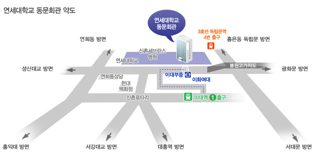

저희 결혼식에 모십니다 ♫
김종환 & 이승민
일시 · 장소
2015년 4월 19일 일요일 오후 1시연세대학교 동문회관 3층 예식홀

서울 서대문구 연세로 50 (신촌동 134)
TEL 02-2123-4760~1
TEL 02-2123-4760~1
오시는 길
- 2호선 이대역 1번 출구(100m) 직진 → 751번, 7017번 탑승 → 이대부중 하차
- 3호선 독립문역 4번 출구 → 사거리에서 우회전 → 극동아파트 정류장에서 버스 승차 470, 601, 750A, 750B, 7737번
- (12:20 / 12:40) 2호선 이대역 3번 출구 앞 → 동문회관
- 간선버스(파랑): 272, 370, 470, 601, 606, 607, 672, 700, 707, 708, 710, 750(A,B), 751번
- 지선버스(초록): 6714, 7017, 7024, 7737번
- 광역버스(빨강): 567파주, 770고양, 76고양 / 공항버스 6011번
동문회관 주차장 이용 : 2시간 무료, 연세대학교 정문 방향에서 오시는 분은 금화터널 고가도로 밑에서 유턴하시면 됩니다.
갤러리